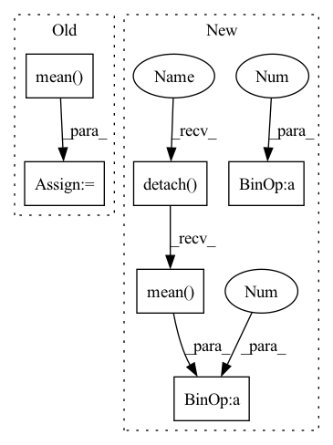

Pattern ID :601

Before Change
// diversity = torch.minimum(var, torch.ones_like(var))
// reg -= diversity
diversity = batchWiseLogit.std(1).mean(-1).sigmoid()
// summedProb = batchWiseLogit.sum(1)
// posterior = OneHotCategorical(logits=summedProb)
After Change
for latent, q in zip(latents, quantizeds):
l2QLoss.append(F.mse_loss(latent.detach(), q, reduction="none").mean(axis=(1, 2, 3)))
l1QLoss.append(F.l1_loss(latent.detach(), q, reduction="none").mean(axis=(1, 2, 3)))
l2QLoss.append(0.00001 * F.mse_loss(latent, q.detach(), reduction="none").mean(axis=(1, 2, 3)))
l1QLoss.append(0.00001 * F.l1_loss(latent, q.detach(), reduction="none").mean(axis=(1, 2, 3)))
l1QLoss = sum(l1QLoss)
l2QLoss = sum(l2QLoss)
In pattern: SUPERPATTERN
Frequency: 3
Non-data size: 6
Instances
Fragment ID: 2283331
Project Name: xiaosu-zhu/mcquic
Commit Name: fea4d517415acb825c6282b84ea39c0989abf5fc
Time: 2021-03-23
Author: xiaosu.zhu@outlook.com
File Name: src/mcqc/losses/structural.py
M Class Name: CompressionLossTwoStage
N Class Name: CompressionLossTwoStage
M Method Name: forward(8)
N Method Name: forward(8)
M Parent Class: nn.Module
N Parent Class: nn.Module
M File Name: src/mcqc/losses/structural.py
N File Name: src/mcqc/losses/structural.py
M Start Line: 69
M End Line: 91
N Start Line: 53
N End Line: 60
'>
Before Change
batchWiseLogit = logit.reshape(len(logit), -1, logit.shape[-1])
// [n, k]
summedProb = batchWiseLogit.mean(1).sigmoid()
target = torch.ones_like(summedProb) / 2.0
// [n, ]
reg = F.binary_cross_entropy(summedProb, target, reduction="none").sum(-1)
// [n, k] -> [n, ]
diversity = batchWiseLogit.var(1).sum(-1)
reg -= diversity
// posterior = OneHotCategorical(logits=summedLogit, validate_args=False)
// prior = OneHotCategorical(probs=torch.ones_like(summedLogit) / summedLogit.shape[-1], validate_args=False)
After Change
l2QLoss = list()
l1QLoss = list()
if not e2e:
for latent, q in zip(latents, quantizeds):
l2QLoss.append(F.mse_loss(latent.detach(), q, reduction="none").mean(axis=(1, 2, 3)))
l1QLoss.append(F.l1_loss(latent.detach(), q, reduction="none").mean(axis=(1, 2, 3)))
l2QLoss.append(0.1 * F.mse_loss(latent, q.detach(), reduction="none").mean(axis=(1, 2, 3)))
l1QLoss.append(0.1 * F.l1_loss(latent, q.detach(), reduction="none").mean(axis=(1, 2, 3)))
l1QLoss = sum(l1QLoss)
l2QLoss = sum(l2QLoss)
'>
Fragment ID: 2283318
Project Name: xiaosu-zhu/mcquic
Commit Name: a70c627dfb797c38494d697f152f70f80bea53e3
Time: 2021-03-21
Author: xiaosu.zhu@outlook.com
File Name: src/mcqc/losses/structural.py
M Class Name: CompressionLossTwoStage
N Class Name: CompressionLossTwoStage
M Method Name: forward(8)
N Method Name: forward(8)
M Parent Class: nn.Module
N Parent Class: nn.Module
M File Name: src/mcqc/losses/structural.py
N File Name: src/mcqc/losses/structural.py
M Start Line: 49
M End Line: 86
N Start Line: 49
N End Line: 93
'>
Before Change
oneHot = F.one_hot(b, k).float()
hard = oneHot @ c
hardQE = F.mse_loss(hard, z)
loss += (softQE + hardQE + 0.1 * F.mse_loss(hard, soft)).mean()
return loss
class CompressionLoss(nn.Module):
def forward(self, images, restored, codes, latents, logits, quantizeds, cv):
After Change
class QError(nn.Module):
def forward(self, latents, zqs, softs):
loss = 0.0
for z, zq, soft in zip(latents, zqs, softs):
qe = F.mse_loss(z.detach(), zq, reduction="none").mean(axis=(0, 2))
commit = F.mse_loss(z, zq.detach(), reduction="none").mean(axis=(0, 2))
softQE = F.mse_loss(z.detach(), soft, reduction="none").mean(axis=(0, 2))
softCommit = F.mse_loss(z, soft.detach(), reduction="none").mean(axis=(0, 2))
// joint = F.mse_loss(soft, zq, reduction="none").mean(axis=(0, 2))
loss += qe + 0.01 * commit + 0.1 * (softQE + 0.01 * softCommit)
return loss
class CompressionLoss(nn.Module):
'>
Fragment ID: 2283321
Project Name: xiaosu-zhu/mcquic
Commit Name: 163d9bc5bb4d433d52358cf5c7abc5955136f574
Time: 2021-02-25
Author: xiaosu.zhu@outlook.com
File Name: src/mcqc/losses/structural.py
M Class Name: QError
N Class Name: QError
M Method Name: forward(4)
N Method Name: forward(5)
M Parent Class: nn.Module
N Parent Class: nn.Module
M File Name: src/mcqc/losses/structural.py
N File Name: src/mcqc/losses/structural.py
M Start Line: 11
M End Line: 21
N Start Line: 12
N End Line: 19